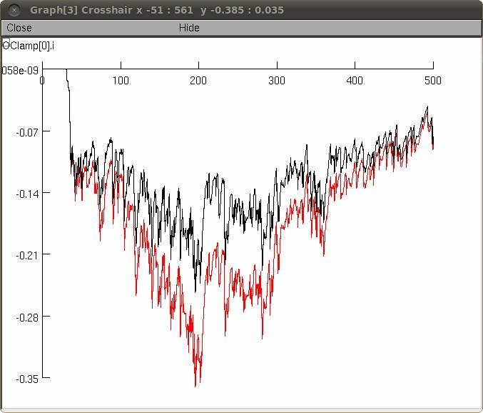

This is the readme for the model associated with the paper: Poleg-Polsky A, Diamond JS, 2011 Imperfect Space Clamp Permits Electrotonic Interactions between Inhibitory and Excitatory Synaptic Conductances, Distorting Voltage Clamp Recordings. PLoS ONE 6(4): e19463. doi:10.1371/journal.pone.0019463 This simulation examines the accuracy of the voltage clamp technique in detecting the excitatory and the inhibitory components of the synaptic drive. TO RUN THE SIMULATION (First auto-launch from ModelDB, or download and extract the archive and then compile the mod files with nrnivmodl (unix), mknrndll (mswin), or drag and dropping archive folder onto mknrndll (mac)). To run the simulation press the "run" button on the control panel. To change the excitatory synaptic conductances set the "AMPA" and the "NMDA" values (default are 0.5 and 0.2 nS) To set the inhibitory conductance change the "Amp" value under "Inhibition". "Tau" changes the decay time constant of the inhibitory synapse. The "Hol determines the holding potential of the voltage clamp. The "batchrun" button executes multiple runs at holding potentials between -100 and 20mV GRAPHS Graph[0] and [4]-somatic (and dendritic) voltage Graph[1] excitatory (ge) and inhibitory (gi) conductances Graph[2] excitatory (ie) and inhibitory (ii) currents Graph[3] the current recorded by the voltage clamp electrode EXAMPLE Figure1 (below) shows the current recorded by the somatic electrode during execution of the simulation at a holding potential of -60mV with excitation and inhibition (black) and excitation alone (red). The inhibitory drive, though "clamped" at its reversal potential had a significant influence on the recording.  20110511 ModelDB Administrator: globalRa (Ra=100) update was added to end of vccell.hoc